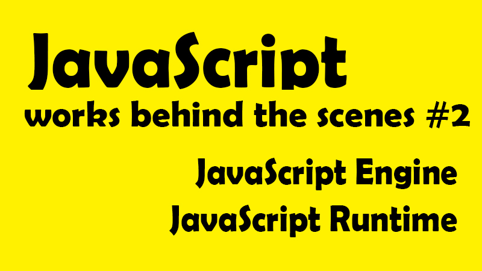

這一系列文章，是在 Udemy 上參與 Jonas Schmedtmann 的課程- The Complete JavaScript Course 2021: From Zero to Expert! 所做的學習筆記，為了深入理解 JavaScript 運作原理，記下那些我未曾注意過的 JavaScript 細節。內容若有任何錯誤，歡迎留言交流指教！
📌 JavaScript 引擎是什麼？
說到 JavaScript 原理，我們必須先了解 JavaScript 到底是如何被執行的，而這就必須先談到 ─JavaScript 引擎
JavaScript引擎是一個專門處理 JavaScript 指令碼的虛擬機器，一般會附帶在網頁瀏覽器之中。而每個瀏覽器都有自己的 JavaScript 引擎，如 Chrome 的 v8，或是 Firefox 的 SpiderMonkey，而其中最著名的當然就是 Google 的 V8 引擎，V8 為 Google Chrome 與 node.js 提供動力。
而所有的 JavaScript 引擎都是主要由兩個元件組成：
- Call Stack （執行堆疊、堆疊棧）
- Memory Heap （內存堆）
Call Stack 是程式碼實際執行的地方，透過各程式碼的執行環境（execution contexts）依序安排執行。Memory Heap 是一個非結構化的內存池，這裡儲存了我們的應用程序所需要的所有對象。
而這兩個重要元件及實際執行的細節，會在下篇筆記詳細介紹，因為那就是 JavaScript 的核心原理。現在我們大概知道程式碼是在哪裡被執行後，讓我們更進一步談談程式碼是如何在電腦或瀏覽器上運作的？
📌 機器如何讀懂程式語言？
首先，我們都知道電腦只看得懂機器語言，也就是 0 與 1 。但我們寫這麼多的英文（所謂的抽象語言）又是怎麼被電腦所理解呢？沒錯，當然就是需要經過層層翻譯。而這個擔當我們的語言與電腦機器語言間的翻譯工具，我們稱它為編譯器（Compiler）。
編譯器（Compiler）是一種電腦程式，主要目的是將我們寫成的高階語言（原始程式 source program），翻譯輸出成電腦能解讀、執行的目標語言（target language），再打包成執行檔給電腦執行。
而通常現代編譯器的主要工作流程如下：
原始碼（source code）→ 預處理器（preprocessor）→ 編譯器（compiler）→ 組譯程式（assembler）→ 目的碼（object code）→ 連結器（linker）→ 執行檔（executables），最後打包好的檔案就可以給電腦去判讀執行。
對編譯器有大致的理解後，讓我們再來談談編譯的方法，其中大致可以分為編譯語言 (Compiled Language) 和直譯語言 (Interpreted Language)，與結合這兩種語言的即時編譯語言(Just-In-Time Compilation)
📌 直譯式語言 VS 編譯式語言（Compiled Language VS. Interpreted Language）
◆ Compilation 編譯式語言 （Compiled Language）
一次性將整個原始碼編譯成為機器語言，並寫成可以在機器上執行的二進制文件檔，然後交由電腦執行。而編譯式語言大多都是靜態語言（static language），具有事先定義型別、型別檢查 (type check) 與擁有高效能的執行速度等特性。
編譯流程： source code → 編譯 → machine code (portable file 可攜式檔案) → 執行 → program running 例如：C、C++、bjective-C、Visual Basic
◆ Interpretation 直譯式語言 （Interpreted Language）
相較編譯式語言，直譯式語言就像是一個即時口譯員員，不是將整份文件一次性翻譯，而是由上到下，由左到右，在要執行時，才將程式碼逐行翻譯時同步逐行執行，也就是說讀取與執行是同步發生的，不像編譯式語言是「在執行前，提前翻譯完成」，而當然相較提前一次翻好直接執行的編譯式語言，直譯式語言的速度是相對較慢的，而通常這類型的語言也多半以動態語言(dynamic language)為主，具有靈活的型別處理、動態生成與程式彈性。
編譯流程： source code → 編譯同時讀取執行 line by line → program running 例如：Python、Ruby，而 JavaScript 也曾經被歸類為直譯式語言
差異：直譯式語言 VS 編譯式語言
◆ 執行速度：編譯式語言 > 直譯式語言
由上述流程可見，一般來說編譯語言已經在執行前預先編譯完成整份文件，在執行期上，少了直譯式語言逐行翻譯的等待時間，當然執行效率就會高於直譯式語言。
◆ 開發效率、除錯速度：編譯式語言 < 直譯式語言
同理，因為編譯語言是整份原始碼完整翻譯的原因，無法像直譯式語言，開發完一段程式碼就馬上執行及除錯，所以對於人類（開發人員）在開發效率與除錯速度而言，直譯式語言在整體的開發彈性上是優於編譯式語言的。
📌 現代 JavaScript 即時編譯語言
曾經 JavaScript 是一個純粹的直譯式語言，但因為執行效率與編譯式語言落差太多，以及日漸成熟的網路應用程式，低效能已經是一件不能被接受的事情。(一言不合就很容易讓人關掉網頁，對吧？)
▽ Just-In-Time Compilation 即時編譯(混合使用編譯與直譯)
現代 JavaScript 是採即時編譯法，而這個方法簡單來說，就是先一次性編譯整個原始碼，然後立即執行，與編譯式語言相同的步驟為「提前編譯」，但沒有生成文件，而是直接執行。
編譯流程： source code → 編譯 → machine code(沒有可移植文件) → 執行 line by line(多次優化) → program running
等等，真的這麼簡單嗎？那為什麼還這麼多人認為 JavaScript 是直譯式語言？ 現在讓我們進一步了解，JavaScript 到底是怎麼做到這件事的 ─

JavaScript 原始碼進入引擎 → 解析(Parsing) → 轉為數據結構，組成抽象語法樹(AST-abstracr syntax tree)(註 1) → 編譯(Compilation) → AST 轉換為 machine code 並立即被執行(註 2) → program running
註 1：在這個步驟，是先將每一行代碼拆分為對程式語言而言有意義的片段，例如 const、function 等關鍵字，並將這些所有片段以結構化的方式生成抽象語法樹(AST)。並同時在這個步驟會檢查是否有語法錯誤的情形。(如上圖右側)
*AST abstracr syntax tree 與 DOM Tree 沒有任何關係，只是引擎內的整個代碼的表示方式。DOM 是一個文件（樹）的結構化表示法也稱為文件物件模型，是一個定義讓程式可以存取並改變文件架構、風格和內容的方法。
現代 JavaScript 引擎高效執行策略
註 2：為了讓程序可以盡快開始執行，JavaScript 引擎首先會創建一個未優化的 machine code 並直接開始執行，而在執行期間，這段代碼也在後台重新編譯、持續優化，並在每次優化後，未優化的代碼都會被掃除，且新的更優化的代碼也不會停止執行，如此反覆調用、堆棧執行代碼，而這就是 V8 之所以能運行如此快速的原因。
而這一整個解析、編譯、優化的過程發生於引擎內部的一些特殊線程中，是我們無法從程式碼中訪問的，也就是說這些過程與我們在執行堆疊（call stack）中執行的主要線程程式碼是完全分開來的。
雖然整體實現方式會因為不同的瀏覽器所搭載的不同 JavaScript 引擎而略有不同，但現代版 JavaScript 的編譯方式皆類似於此。
而既然談到瀏覽器，最後讓我們順帶介紹一下 JavaScript 的運行環境。
📌 JavaScript 的運行環境 JavaScript Runtime
JavaScript 的運行環境－（在瀏覽器內 in the browser）

首先，為了避免混淆運行環境的原件都是 JavaScript 的一部份，或把所有元件混為一談，先讓我們單純想像 JavaScript 的運行環境是一個容器，裡面裝有所有運行 JavaScript 所需要的物件。
◆ JavaScript 引擎
首先，要運行 JavaScript 當然需要 JavaScript 引擎（而這又會帶出兩個主要元件 Heap、Call Stack 如圖），這也是為什麼在這篇筆記中，反覆圍繞著 JS 引擎，因為沒有了 JS 引擎，就沒有辦法運行 JS 了。
◆ Web APIs
為了能夠正常運作，我們還需要訪問 Web APIs，而 Web APIs 就是與 DOM 有關的一切，例如 setTimOut、setInterval、document，甚至 console.log 等，由各家瀏覽器所提供。
簡單來說，Web API 就是一個提供給引擎能夠訪問物件的功能，但並不屬於 JavaScript 引擎的一部分。JavaScript 只是需要通過訪問這些 API 才能接觸全局窗口物件。
◆ Callback Queue 回調列隊
這是一個數據結構包含了所有正準備被執行的回調函式（callback function），說起來好像很複雜，但例如我們常使用的滑鼠點擊事件就是一個回調函式。
當物件被點擊觸發事件，該回調函式（callback function）就會被調用（be called），也就是事件觸發後，回調函式會被放入回調列隊（Callback Queue）中排隊等待被執行，而當 call stack 為空時，正在排隊被執行的 callback function 就會被傳入 call stack 中，以便它被執行，而這樣的協調機制就稱為事件循環（Event Loop）。
我們其實可以將事件循環（Event Loop）白話一點理解為是交通管理員，因為 Event Loop 做為瀏覽器內的一個協調機制，安排了整個將回調函式從回調列隊安排放入 call stack，讓它們可以被執行的過程，而這也是 JavaScript 非阻塞併發模型的如何被執行核心。
JavaScript 的運行環境－Node.js（在瀏覽器外 out of browser）

雖然說 JavaScript 要運行，必須透過瀏覽器附載的 JavaScript Engine，但其實還有一個叫做 Node.js 的後端語言，讓 JavaScript 可以在離開瀏覽器的情況下運作，而當然少了瀏覽器，JavaScript 的運行環境當然就沒有了 WEB APIs，取而代之的是 C++綁定和線程池（thread pool）
以上就是 JavaScript 運行環境的基本介紹，接下來讓我們更深入了解，JavaScript 的執行環境及執行邏輯。
JavaScript 深度旅遊系列
- JS#1：JavaScript 運作原理 ─ 深入研究之前，先了解全局
- JS#2：JavaScript 引擎與 JavaScript 的運行環境 ─ 什麼？JavaScript 早就不只是直譯式語言了？！
- JS#3：JavaScript 的執行原理，Javascript 的執行環境 (Execution context) 與執行堆疊 (Call Stack)
- JS#4：Javascript 的範疇/作用域（Scope）與範疇鏈 （Scope Chain）變數查找（variable lookup）
- JS#5：優先認可 變數提升 Hoisting？暫時死區(Temporal Dead Zone) ─ const、let、var 的小祕密